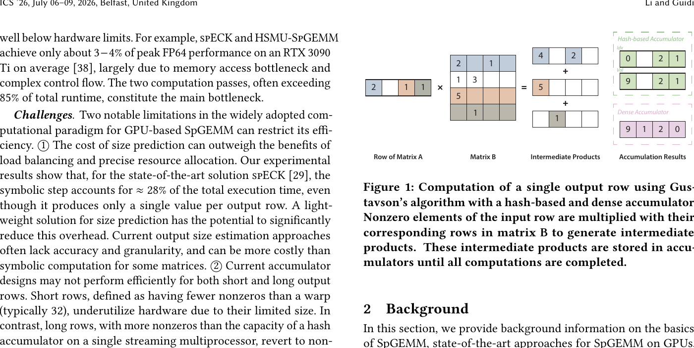
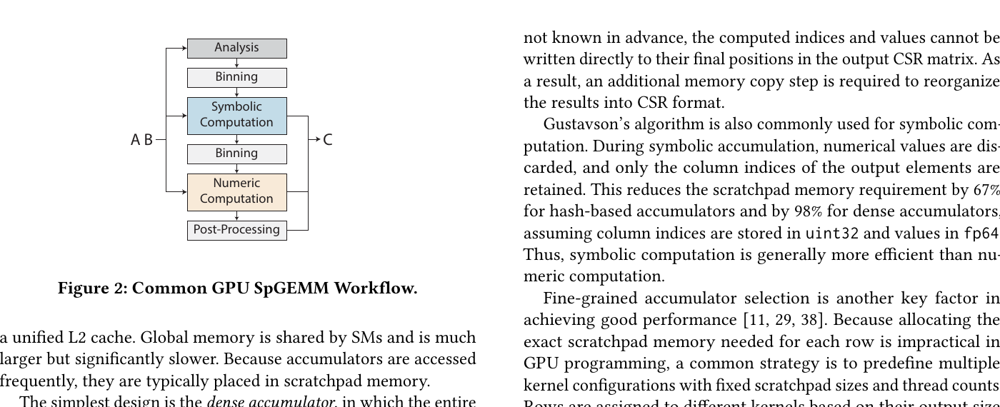
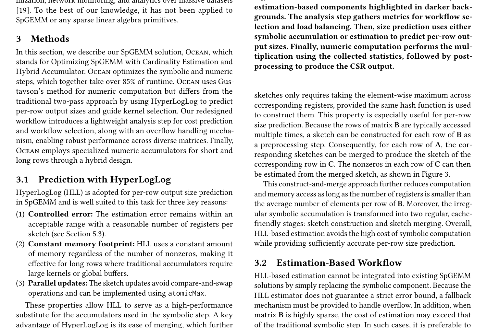
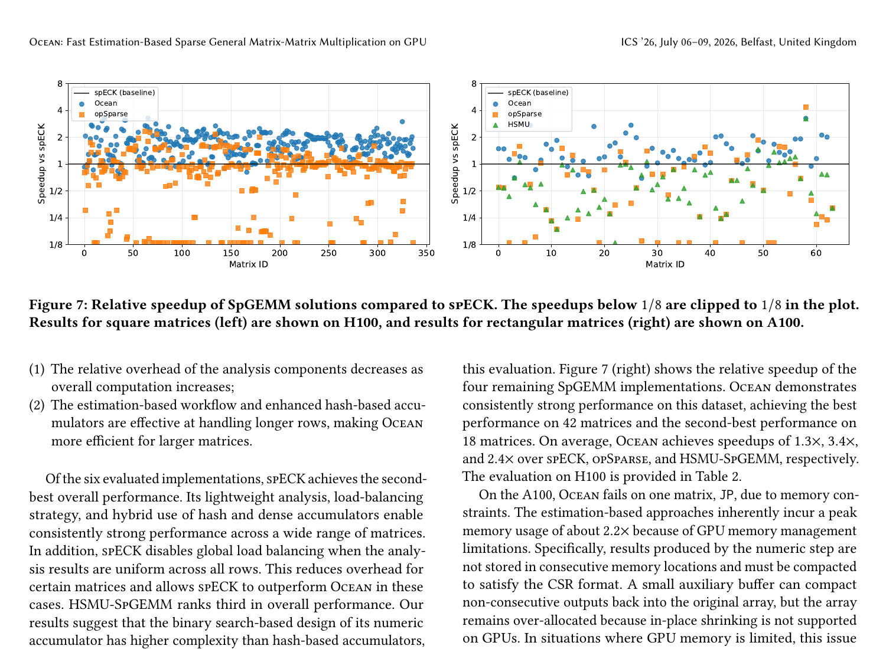
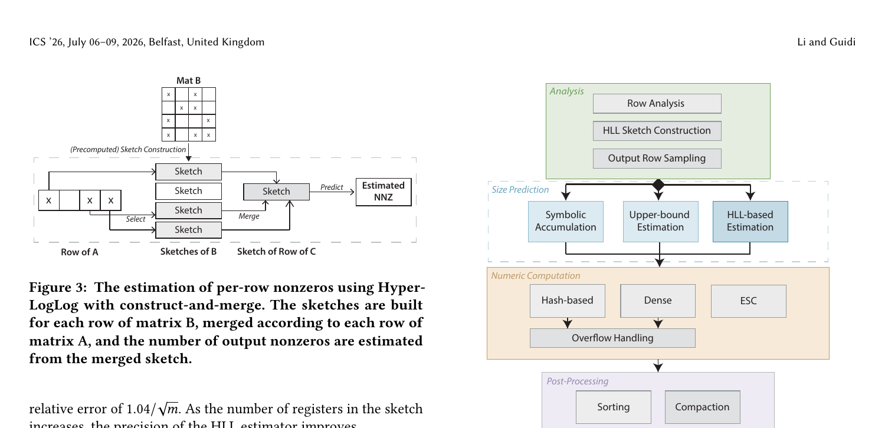
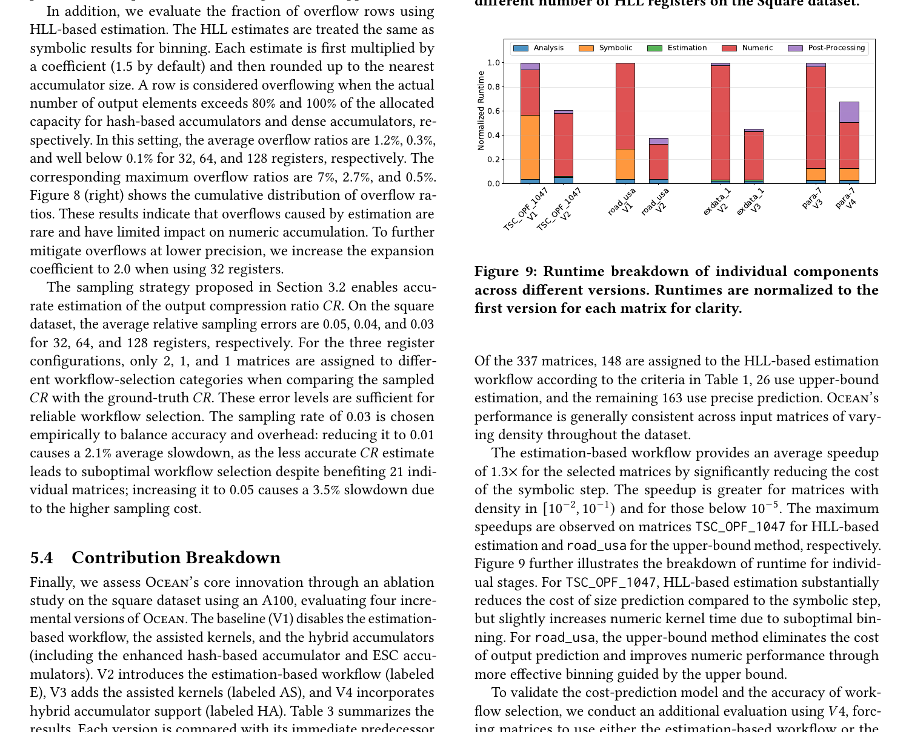

上半场:四十八年系列工作的五幕剧 · 下半场:我们的三层路由落地实录——部署系统净赢 ocean 4-5%
文献脉络 12′ · 我们的工作 13′ · 下一步 2′
C=A·A 每行 nnz 计算前不可知 → 内存与负载都要"预知未来"
→ 两遍范式(symbolic+numeric,2014 定型)
symbolic 平均吃掉 ~28% 运行时间(ocean ICS'26 实测)
行长跨 4-6 个数量级;行内去重代价 = 累积器选型,矩阵间差异极大
→ 六种累积器谱系(第三幕的主角们)

Gustavson 行累积器示意(ocean 论文 Figure 1)——左:hash 累积器;右:dense 累积器
硬件不变量(H100):smem ~228KB/SM · 无 smem double 原子 · launch 间隙 2-5µs/发
行 i 的乘积流: SMEM hash 表 ┌─────────────────────┐ ┌──────┬──────┬──────┬──────┬──────┐ │ A[i,·] × B[·,j] │ │col=3 │col=7 │ -1 │col=3 │ -1 │ ← t_col │ j=3 j=7 j=3 ... │────→│val=5 │val=2 │ (空) │val=+3│ (空) │ ← t_val │ ↓ │ 探针 │ │ │ │ │ │ │ hash(j)%表长 探测 │ └──────┴──────┴──────┴──────┴──────┘ │ 命中→atomicAdd(val) │ 线性探测: slot→slot+1→…(mod 表长) │ 空槽→CAS 占位 │ 表满→溢出标志→更大表重试 │ 别人的键→前进重探 │ └─────────────────────┘ 分析步(轻量): 估算行输出规模 est[i] → 表长 = next_pow2(α×est)
hash_spa 档位梯 = spECK 思想的分档极限(20 桶逐档几何),同行集 0.52× vs ocean

GPU SpGEMM 标准两遍工作流(ocean 论文 Figure 2)——symbolic(数数) + numeric(算数)
这条线的 表容量问题 贯穿始终——spECK 用分析步缓解,ocean 用 HLL 估计替代——问题没死,只是解法在进化。
新矩阵 A ──→ 提取特征 ──→ MatNet 深度模型 ──→ 预测最优 (format, algorithm)
│ │
│ · sparse features(行/列统计) │ 例: (CSR, hash)
│ · density repr(矩阵密度图/块特征) │ (ELL, merge)
│ │ (COO, sort)
▼ ▼
不跑任何实验 直接执行
纯预测,零采样 选对了=白赚
训练数据:2700+ SuiteSparse 阵 × 各候选算法实测 → 标签=最优组合
这两个局限——不分层和无证书——恰好就是我们三层裁定架构的两个入口。
全部中间乘积按 (row,col) 排成一条全局序列:
┌───┬───┬───┬───┬───┬───┬───┬───┬───┬───┐
│r1c3│r1c7│r2c1│r2c5│r3c2│r3c4│r3c9│r4c1│r4c6│...│
└───┴───┴───┴───┴───┴───┴───┴───┴───┴───┘
│←── Block 0 ──→│←── Block 1 ──→│←── Block 2 ──→│
2048 个乘积/块(可跨行)
每块独立处理:
① expand:线程各展开自己的乘积 → (key, val)
② BlockRadixSort:块内按键排序
③ 分段求和去重(同列合并) → 输出
断点用 tournament tree 精确计算(Varman 分区算法)

| 组件 | 发现 |
|---|---|
| 估计 | 337 阵中 48% 仍走精确(其消融)——估计是门控 niche |
| 调度 | 静态阈值,单层,不学习 |
| 自纠 | 无判废证书、无回退——retry 只保正确 |
| 评测 | 自选 337 阵(∩ HSMU 338 = 0)——碎片化 |

vs spECK 1.4× / opSparse 2.6× / Tile 3.5× / HSMU 2.0×(A100)

每行构造一个 HyperLogLog sketch → merge 到全局 sketch → 从最大前导零位数估算 distinct 值个数。误差 ~1-2%。

V2=估计工作流(主增益 1.30×) → V3=辅助 kernel(+3%) → V4=混合累积器(+6%) → 总体 1.25×(vs 基线 V1)。337 阵中 163(48%) 被分析步送回精确 symbolic。
我们的定谳:ocean 的"运行时自纠" = 溢出 retry——没有判废证书、没有回退目标。估计是门控 niche,不是万能默认(与我们 CD 定谳完全同构)。
| 年代 | 里程碑 | 一句话 |
|---|---|---|
| 1978 | Gustavson | 行式母体+累积器抽象(48 年=换累积器+换分配) |
| 1992-2007 | MATLAB · Cohen'96/97 · HLL | 工程化+两颗理论种子(2026 在 ocean 合流) |
| 2014 | Liu & Vinter | 两遍范式(symbolic+numeric)定型 |
| 2015-2017 | bhSparse · nsparse | ESC 排序线 / smem hash 线成军 |
| 2019-2020 | Winter · ASpT · spECK | 自适应表 / tiling 线 / hash 成熟(深讲①) |
| 2022 | opSparse · TileSpGEMM · Du'22b | binning 优化 / tiling 成熟 / 压缩比预测(我们 dup 维度前作) |
| 2025 | HSMU(HPCA) · MMSpGEMM(PACT) · Wang(TACO) · Wolfson-Pou | bitmap mask+binning / 归并分区(深讲③) / ML 选估计器 / 局部性生成 |
| 2026 | ocean(ICS) · gMAGNUS · Trident | 估计范式(深讲④) / 分层 multisplit / 多 GPU(ocean 同组) |
三条线的最后一格同时是空白:形态级分发 + 三层裁定 + 证书兜底 —— 就是我们的入口。
读矩阵头(O(n) 扫描,特征免费)
├─ n ≥ 5000 ──┬ skew>1700∧avg<10 ──→ hash·C配置 ← 带状族路由(blowey/rajat 系 −30%)
│ └ 其他 ───────────→ hash·A配置 ← 预门(杀 337 侧 4% 决策自税)
│ └─ 溢出证书判废 → merge3 兜底(L2 实战)
└─ n < 5000 ──┬ avg<2∧n≥10k ────→ hash ← 退化否决(对角阵保险)
└ 4 变量 logit(重训)→ hash / merge3 ← 学习层(LOO 94.5%)
对前作的三个升级:粒度(变体→管线配置) · 架构(能解析的不学习) · 安全网(retry→判废证书+形态回退)
| 战场 | 部署系统 | oracle 上限 | 备注 |
|---|---|---|---|
| 并集 428 | 0.9486 / 0.9588 / 0.9560(三夜) | 0.9684 | 部署系统超过单臂 oracle |
| ocean337(其主场) | 1.174 | 1.172 | 剩 17% 在 kernel 层(取证已在路上) |
| first100 | 0.41-0.45 | 0.481 | 胜率 95%+,零大输 |
规模分带:<1k 0.372 全胜48/48 · 1k-1万 0.556 · 1万-10万 1.035(分水岭) · >10万 1.398
治疗效应实锤:带状族 −30%(bloweybl 5.0×→1.56×);aggregate 波动=微阵测量噪声,已定位并改进协议(min-of-N)
| 层 | 发现 | 收益 | 怎么来的 |
|---|---|---|---|
| ① 预门 | 老 dispatcher 方向从没错过,亏在决策机器自税 4% | 1.0331→0.9486 | 相位份额+路由痕迹法医分析 |
| ② logit 重训 | 四变量公式权重还是 8 月 100 阵时代的 | f100 −5.6% | 91 张 merge3 标签补测,LOO 94.5% |
| ③ 带状族 | 输面第一族(5× 输)的解药一直在 C 臂里,没人路由过去 | 治疗组 −30% | 输面结构画像:skew>1700∧avg<10 |
前沿曲线(预注册验证):无证书的学习选择,GM 与无回归不可兼得——证书必要性被我们自己的数据反证法钉死。S3 终审:真尾 2 阵 171µs。
评测立场:双方基准之并(428),无懈可击。
| 数字 | 口径/日期 | 数据源 |
|---|---|---|
| 部署系统 0.9486/0.9588/0.9560(三夜) | 10-17/18/19 同夜配对,WARMUP_N=3 | compare/batch437/confirm{,3,4}_428.csv |
| oracle 0.9684 / A 1.0139 / C 1.0517 | 10-15/16 batch437(428×5 列) | compare/batch437/batch_437.csv |
| 带状族治疗 −30% / FLAT +9.1% | 同阵直接对比/同会话 A/B | confirm3 vs confirm / study/49 |
| 悲观界 0.9979 / held-out 22.3% 零尾 | 重算 / 70 阵不相交人群 | study/48 + heldout_246.csv |
| 相位份额/规模分带/输面画像 | 批437 sidecar 全相位 | compare/batch437/ANALYSIS-428.md |
| 口径审计(ocean epilogue 源码验证) | SpGEMM.cuh 行号级 | compare/batch437/CALIBRATION.md |
材料包:report-1021/(01 脉络 · 02 全景 · 03 查新 · slides);数据 manifest=compare/README.md